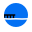
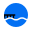

Pump Foil Dock
Locations with docks suitable for pump foiling

Wake Thief Spot
Spots for catching boat wakes
Wave Wind Spot
Locations with both waves and wind
Wind Spot
Locations with good wind conditions
Wave Spot
Locations with good waves for foiling
Rental Station
Places to rent foil equipment
Shop
Retail shops selling foil equipment
Coach/School
Foiling schools and coaching services
Wake Boat
Wake boat services for foiling
Downwind Run
Popular downwind routes
Paddle Tour
Paddle touring routes
Default
Default marker for unspecified spots
Temporary Marker
Marker used when adding new spots
Pending
Spots awaiting approval